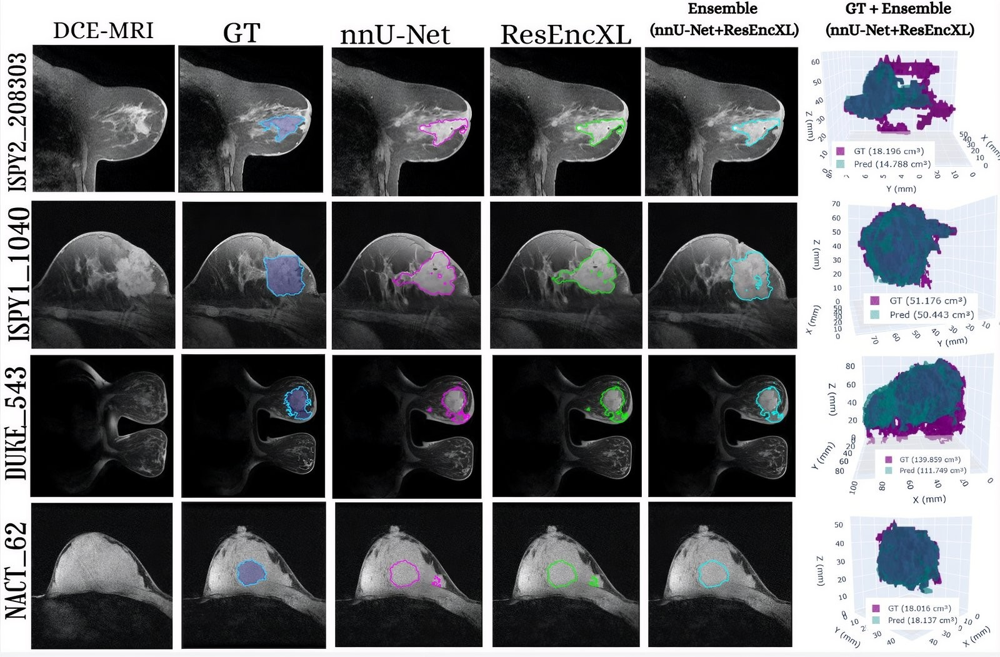

Equipos y datos clínicos que funcionan cuando
más se necesitan.
Mantenimiento y gestión de equipamiento biomédico, y soluciones de inteligencia artificial para imágenes médicas — con el mismo estándar de precisión con el que se calibra un equipo antes de usarlo en un paciente.
Precisión técnica, pensada para el servicio de salud.
Me caracterizo por el pensamiento crítico y la precisión técnica: analizar sistemas complejos, encontrar dónde se puede optimizar y proponer soluciones prácticas que de verdad se puedan implementar en un entorno clínico.
Trabajo con disciplina y ética profesional, con un solo objetivo detrás de cada proyecto: que el equipo, el dato o el modelo de IA respondan cuando el personal de salud los necesita.
En qué te puedo ayudar
Cuatro frentes donde la ingeniería biomédica y la IA se encuentran con la operación diaria de un servicio de salud.
Mantenimiento y gestión de equipos
Mantenimiento preventivo y correctivo, calibración e inspecciones funcionales de monitores, bombas de infusión y equipos de diagnóstico, con registros que dan trazabilidad completa.
IA aplicada a imágenes médicas
Procesamiento y segmentación de imágenes médicas (MRI y otras modalidades) con aprendizaje profundo, orientado a apoyar la detección y el diagnóstico temprano.
Ciclo de vida del equipamiento
Estimación de vida útil, cronogramas de mantenimiento y acompañamiento en el cumplimiento de procesos y normativa aplicable al equipamiento médico.
Documentación e informes técnicos
Informes de mantenimiento, guías con metodología GRADE y documentación clara que facilita la trazabilidad y las auditorías del servicio.
Proyectos en los que he trabajado
Cada tarjeta se despliega con el detalle completo. Ábrelas para ver el enfoque, el periodo y los resultados.
01
Segmentación automática de nódulos mamarios en imágenes DCE-MRI
Investigación de aprendizaje profundo enfocada en apoyar la detección temprana de cáncer de mama, desarrollada a partir del desafío internacional MAMA-MIA de segmentación de imágenes médicas mediante inteligencia artificial.

Dónde he puesto esto en práctica
Quito, Ecuador
- Mantenimiento preventivo y correctivo de equipos biomédicos hospitalarios, garantizando su operatividad en áreas clínicas.
- Inspecciones funcionales y verificación operativa de monitores multiparámetro, bombas de infusión y equipos de diagnóstico.
- Identificación de fallas técnicas y apoyo en procesos de calibración para una atención más oportuna de incidencias.
- Elaboración de informes técnicos y registros que dieron trazabilidad al estado operativo de los equipos.
- Coordinación con personal técnico y clínico para fortalecer la respuesta operativa del área.
Formación continua
Cómo trabajo
Idiomas
Español (nativo) · Inglés intermedio, con comprensión de documentación técnica y comunicación profesional.
Competencias
Pensamiento analítico, resolución de problemas, trabajo colaborativo y aprendizaje continuo en entornos multidisciplinarios.
¿Tu servicio necesita este tipo de apoyo?
Cuéntame qué equipo, proceso o proyecto de IA tienes en mente y te respondo con los siguientes pasos.
Quito, Ecuador